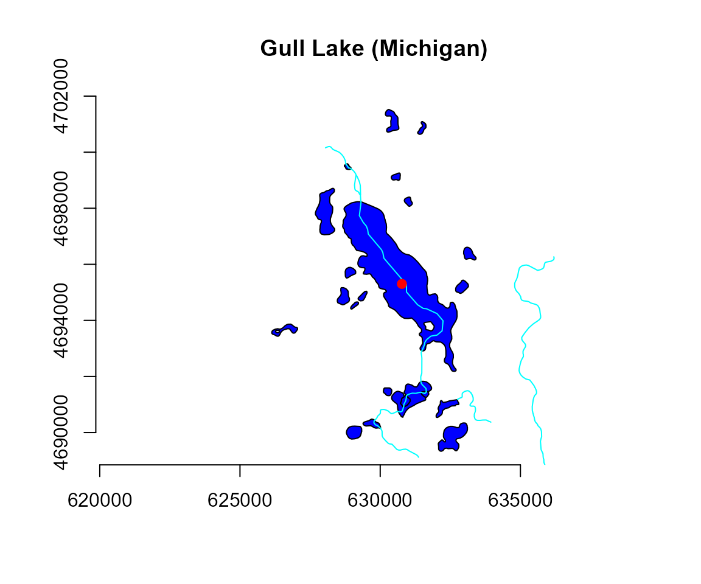

gull_meta <- wikilake::lake_wiki("Gull Lake (Michigan)")
gull <- nhd_plus_query(gull_meta$Lon, gull_meta$Lat,
dsn = c("NHDWaterbody", "NHDFlowLine"), buffer_dist = 0.05)plot(gull$sp$NHDWaterbody$geometry, col = "blue", main = "Gull Lake (Michigan)")
plot(gull$sp$NHDFlowLine$geometry, col = "cyan", add = TRUE)
plot(gull$pnt, col = "red", pch = 19, add = TRUE)
axis(1); axis(2)